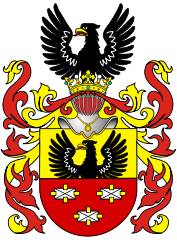
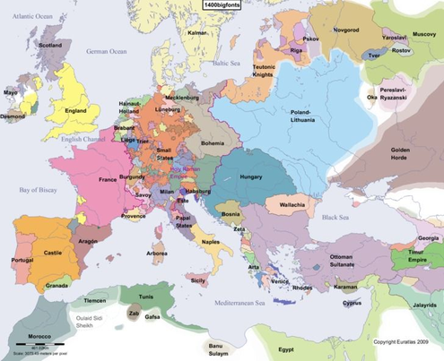
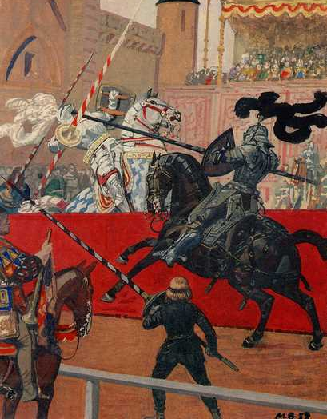
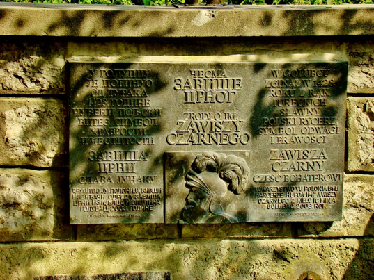

Zawisza Czarny
z Garbowa herbu Sulima

Życiorys
Rodzina:
Zawisza Czarny urodził się w 1370 r. w Garbowie jako syn kasztelana konarskiego sieradzkiego, Mikołaja z Garbowa. Matka nazywała się Dorota. Rodzeństwem Zawiszy byli Jan zwany Firurejem, starosta spiski i stolnik krakowski oraz Piotr Kruczek.
Sytuacja polityczna
Europa na przełomie XIV i XV w. była w stanie przemian geopolitycznych. We Włoszech pojawił się renesans, Hiszpanie odkryli Nowe Lądy, Anglia i Francja otrząsnęły się po wojnie stuletniej. Istniejące od 395 r. Cesarstwo Wschodniorzymskie (popularnie zwane jako Bizancjum) chyliło się ku upadkowi, przez ataki ze strony Serbów i Turków. W Czechach działał Jan Hus. Luksemburczycy przejęli Tron Węgier i Niemiec. Polska zaś w tym czasie zamierzała odbić z rąk Krzyżaków Pomorze, w tym celu skłoniła się ona w stronę pogańskiej Litwy posiadającą we władaniu większość Rusi,a którą ci rycerze najeżdżali. W Azji do odrodzenia dawnego Imperium Mongolskiego dążył wielki wódz Tamerlan.
Młodość
Pełne imię najwybitniejszego polskiego rycerza brzmi: Zawisza Czarny z Garbowa herbu Sulima. Przydomek Czarny nadany został prawdopodobnie ze względu na kolor włosów lub skóry, a nie ze względu na kolor zbroi jak się czasem błędnie powtarza.
Zawisza i jego bracia dzieciństwo spędzili za pewne jak inne dzieci szlacheckie, czyli na koniu, na polu, na łowach, na ćwiczeniach. Polscy herbowi nie byli wtedy zbytnio wykształceni, lecz Zawisza odebrał podstawowe wykształcenie i za pewne potrafił także czytać i pisać i nieznacznie znał łacinę. Poezję miłosną także nie była mu obca. Był więc ów Zawisza wzorem zachodnim rycerzem jak z poematu i byłby to zapewne dowód, że u nas także kwitła zachodnia kultura rycerska. Wiek Zawiszy był za pewne zbliżony do królowej Jadwigi, czyli urodził się na początku lat siedemdziesiątych XIV w. Zwłaszcza, że od krajan Zawiszy - Sandomierzan roiło się na dworze Jadwigi. Można więc założyć że Zawisza zjawił się w krakowie tuż po 1390 r. aby “chwycić się” na dworze króla lub królowej lub możnych polskich.
O poczynaniach Zawiszy przez długi czas niewiele wiemy, ale możliwe, że pierwszy wielki sukces w turnieju wykraczający poza Polskę odniósł Zawisza w turnieju rocznicowym, który dawał wielką szansę na sławę. Małżeństwo Zawiszy było za pewne, tak jak większość wtedy, z rozsądku, Rycerz, którego jedynym walorem była wojaczka musiał się wspomagać sporym posagiem. Ale biskup krakowski nie zgodziłby się na małżeństwo swej bratanice z byle kim, musiał być więc wtedy Zawisza sławnym i bogatym rycerzem.Małżeństwo doczekało się czterech synów – Marcina, Stanisława, Zawiszę i Jana. Dwaj z nich zginęli w trakcie wojen – Stanisław w Bitwie pod Warną w 1444 r. oraz Jan, zmarły w niewoli, do której trafił w czasie Bitwy pod Chojnicami w 1454 r.
Służba Rycerska
„Nie tylko w tej bitwie, w której pojmany zginął, ale we wszystkich wyprawach okazywał się rycerzem dzielnym i znakomitym, słynął odwagą i wielkimi czynami, w których nikt mu nie dorównywał. Był zaś w mowie słodki i ujmujący, tak że nie tylko ludzi zacnych i szlachetnych, ale barbarzyńców nawet swoją uprzejmością zniewalał. Miał przede wszystkim ten rzadki w sobie przymiot, że jak w bitwie najśmielszy zapał, tak w radzie najumiarkowańszą okazywał rozwagę. Godzien za swe bohaterskie dzieła nie moich słabych, ale i Homera samego pochwał.”
Tak opisywał Zawiszę Czarnego Jan Długosz w swej kronice
Zawisza był rycerzem dwóch królów – Władysława Jagiełły i Zygmunta Luksemburskiego. Początkowo służył na dworze węgierskim, wielokrotnie uczestnicząc w królewskich wyprawach przeciwko Turkom. Zawisza Czarny szkolił się na rycerza w szkole Zygmunta Luksemburskiego. Wspomina się o tym, że czynił w rzemiośle rycerskim znaczące postępy, co nie uszło uwagi Zygmunta i przysporzyło mu uznania w jego oczach. Na tyle, że Zygmunt pod wpływem wstawiennictwa Zawiszy miał uwolnić kilku uwięzionych Polaków. W roku 1403 doprowadził w ten sposób do uwolnienia Jana Rogala Rogality, który został uwięziony jako wróg ojczyzny. W roku 1408 uczestniczył Zawisza Czarny w wyprawie Zygmunta Luksemburskiego wraz ze swoim bratem Farurejem w wyprawie wojennej do Bośni, która wypowiedziała Zygmuntowi posłuszeństwo. Wyprawa zakończyła się sukcesem militarnym, zdobytych zostało wiele zamków, zaś Bośnia musiała uznać wyższość Zygmunta.
W 1409 r. powrócił do Polski na wieść o możliwości ostatecznego rozprawienia się z Krzyżakami. Uczestniczył także w bitwie pod Grunwaldem, gdzie według legend uratował w krytycznym momencie królewską chorągiew. Walczył on w niej pod chorągwią ziemi krakowskiej, którą dowodził Zyndran z Maszkowic. Miał iść w pierwszym szeregu tej chorągwi i zasłużyć się dzielnością w czasie bitwy. W bitwie tej wziął zresztą również udział brat Zawiszy z Garbowa, Farurej, odznaczając się w niej wyjątkowym męstwem. Za swoje zasługi, co zostało odnotowane, Zawisza nie oczekiwał w przeciwieństwie do innych rycerzy, nagrody od polskiego króla, Władysława Jagiełły. Podaje się, że został przez niego wynagrodzony dopiero w 1420 roku. Nie zapomniał o nim również Jan Matejko, malując swój słynny obraz „Bitwa pod Grunwaldem”.

Mimo braku uniwersyteckiego wykształcenia w kierunku dyplomacji, rycerz posiadał wszystkie cechy niezbędne w służbie dyplomatycznej. Uczestnicząc w wojnach i turniejach podróżował po całej Europie, znał języki obce oraz zwyczaje panujące na dworach i etykietę. Sława i rozpoznawalność pozwalały mu z kolei na zawiązywanie nowych znajomości, bardzo ważnych w pracy dyplomatycznej. Zawisza był posłem zarówno u Węgrów jak i Polaków. Uczestniczył m.in. w soborze w Konstancji w latach 1414-1418 wstawiając się za czeskim reformatorem - Janem Husem. Bronił też Władysława Jagiełły, postrzeganego przez zachodnich królów jako poganin.
Zawisza był znamienitym pojedynkowiczem. Do historii przeszedł jeden z jego najsłynniejszych pojedynków - z rycerzem hiszpańskim Janem z Aragonii, który odbył się w Perpignano 1415 roku. Obaj rycerze stanęli obok siebie na środku dziedzińca i pokłonili się władcom Francji i Aragonii(wschodniej Hiszpanii). Król Ferdynand po raz wtóry dał znak dłonią. Starcie, na które cała rycerska Europa czekała od lat miało się rozpocząć za kilkanaście sekund. Obydwaj przeciwnicy zajęli pozycje wyjściowe na przeciwległych krańcach dziedzińca. Pierwszy ruszył Aragończyk. Arabska klacz dźgnięta ostrogami ruszyła do przodu. Przeciwnik w czarnym płaszczu położył dłoń na głowie swojego rumaka i powiedział doń coś półgłosem. Ogier rzucił się do przodu jak błyskawica. Aragończyk mierzył w górną część tarczy czarnego rycerza, ozdobionej wizerunkiem orła i trzech kamieni. Liczył na to, że podniesie on tarczę, a wówczas koniec kopii trafi go w brzuch, zwalając z konia. Rycerz jednak przewidział ten manewr i podbił kopię Aragończyka w górę. W drugim starciu czarny rycerz dokonał cios w głowę Hiszpana i gdy ten zasłonił ją tarczą uderzył z całą mocą w sam jej środek. Wszyscy obecni wstrzymali oddech nie wierząc w to, co widzą. Oto olbrzymie ciało niepokonanego dotychczas Jana Aragońskiego sfrunęło z siodła jak zeschły liść porwany podmuchem wiatru i uderzyło o piach dziedzińca.
Relacje Polski i Węgier ochłodziły się nieco. Kolejnym punktem spornym miały stać się Czechy, w których wybuchł bunt przeciwko Zygmuntowi. Zawisza zaś miał w czerwcu 1421 roku posłować w imieniu Władysława Jagiełły do Zygmunta celem wysondowania możliwości zrzeczenia się przez niego korony czeskiej, aby właśnie Jagiełło mógł po rozwiązaniu kwestii religijnych związanych z husytami objąć czeski tron. Na późniejszym etapie tej sprawy Zawisza miał posłować do Zygmunta raz jeszcze, tym razem z powodu zamiaru Zygmunta co do podburzenia Krzyżaków do napaści na Polskę. W tamtym momencie Zawisza pozostał przy Zygmuncie i wziął udział w wyprawie krzyżowej, jaką przygotowywał przeciwko Czechom. Posłował do Pragi przed natarciem Zygmunta, jednakże bezskutecznie. Armia zaś Zygmunta poniosła sromotną klęskę w bitwie pod Kutnohorą, która miała miejsce 6 stycznia 1422 roku. Uciekając Zygmunt pozostawił Zawiszę w charakterze dowódcy w Niemieckim Brodzie, tam stoczył on bitwę z przeważającymi siłami czeskimi, uległ i dostał się do niewoli. Uwolniony został dopiero w momencie, kiedy książę Witold wysłał do Pragi jako namiestnika Zygmunta Korybutowicza. Zawisza powrócił do Polski prawdopodobnie w 1422 roku.
W późniejszym czasie Władysław Jagiełło wysłał do Zygmunta poselstwo z arcybiskupem Mikołajem Trąbą na czele, w celu zażegnania podwójnego niebezpieczeństwa grożącego Polsce zarówno od strony Węgier, jak i Krzyżaków. W poselstwie tym był również Zawisza. Była to jednak jak się miało okazać tylko narada techniczna obu stron, które uradziły możliwość zorganizowania zjazdu z udziałem obu królów. Działał też i później na rzecz pokojowego rozwiązania sporu pomiędzy Zygmuntem a Władysławem. Jeszcze później Zawisza przekazał Zygmuntowi zaproszenie Władysława na uroczystość koronacji królowej Zofii Holszańskiej. Przy okazji wydarzeń tej uroczystości zorganizował on wystawną ucztę, w której oprócz Zygmunta i Władysława wziął udział również zaproszony na koronację Eryk, król Danii oraz wielu duchownych i możnych.
Musiał jednak powrócić do roli rozjemcy, kiedy znowu w kontekście czeskim relacje pomiędzy Władysławem a Zygmuntem uległy pogorszeniu. Uważając oba państwa za swoje ojczyzny Zawiszy zależało, aby nie dopuścić do konfliktu pomiędzy nimi, dbając jednocześnie o to, by obaj władcy mu ufali. Między innymi z tej jego postawy wzięło się powiedzenie „polegać jak na Zawiszy”. Za pośrednictwem właśnie Zawiszy Zygmunt zaprosił Jagiełłę w 1424 roku na Reichstag w Wiedniu. Wiadome jest jednak o sytuacjach, w których sami władcy nie ułatwiali dzielnemu rycerzowi zadania, przykładowo nie mając wymówek wobec Jagiełły Zygmuntowi zdarzało się zrzucać winę na Zawiszę i niewłaściwe przekazanie przez niego informacji. Co ciekawe, Zawisza angażował się też czasem w korespondencję z księciem Witoldem, jak chociażby w kontekście obsady biskupstwa poznańskiego.
Śmierć
Zawisza dbał o status rodu i pełnił funkcję starosty kruszwickiego a potem spiskiego. Mimo, że nie był urzędnikiem wysokiej Rangi, to był tak opisywany.
W ostatnich latach życia uczestniczył w wyprawach Zygmunta Luksemburczyka przeciwko Turkom Osmańskim. W 1428 r. podczas bitwy pod Gołąbcem król uciekł na drugi brzeg Dunaju gdy usłyszał o nadciągających posiłkach tureckich zostawiając mniejsze siły. Drużyna ta, gdzie znalazł się sam Zawisza,została rozbita, zabita lub wzięta w jasyr. Zanim został pokonany, władca posłał po niego łódź, rycerz jednak uznał to za niehonorowe i stanowczo odmówił. Później miał rzekomo ruszyć na Turków. Oni jednak widząc jego błyszczącą zbroję z czarnym orłem wzięli go za króla lub księcia i wzięli go w niewolę. Zginął prawdopodobnie podczas kłótni Janczarów 12 czerwca 1428 r. Jeden z żołnierzy postanowił go zabić gdy inni toczyli spór o to, kto go pojmał. Ciała Zawiszy Czarnego nigdy nie odnaleziono. Pogrzeb odbył się w kościele franciszkańskim w Krakowie listopada tego samego roku.
Polacy obwiniali Zygmunta o śmierć Zawiszy, dlatego ten wysłał list do księcia Witolda chcąc się usprawiedliwić. Wspomniał o rzekomej pomocy rodzinie Zawiszy.